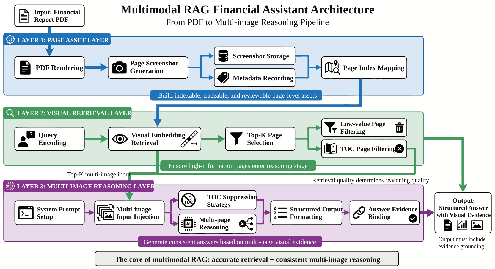
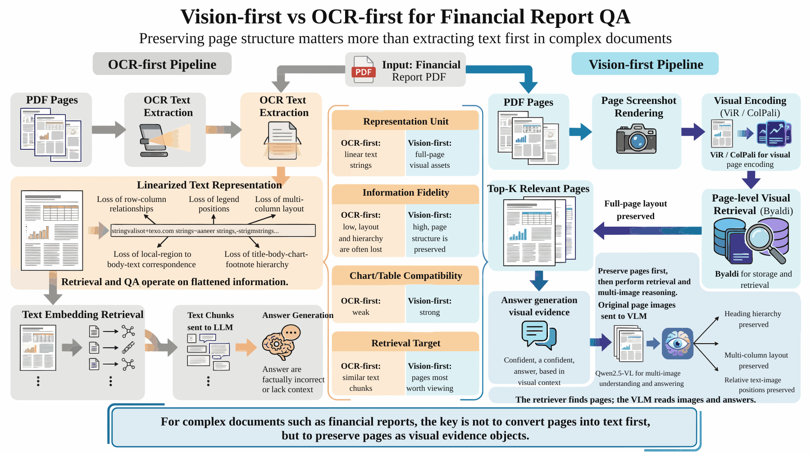
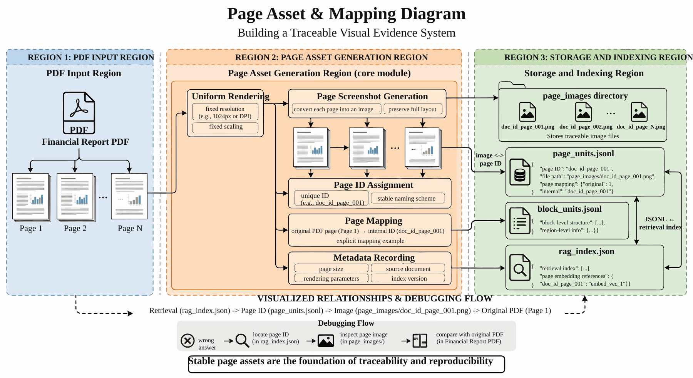
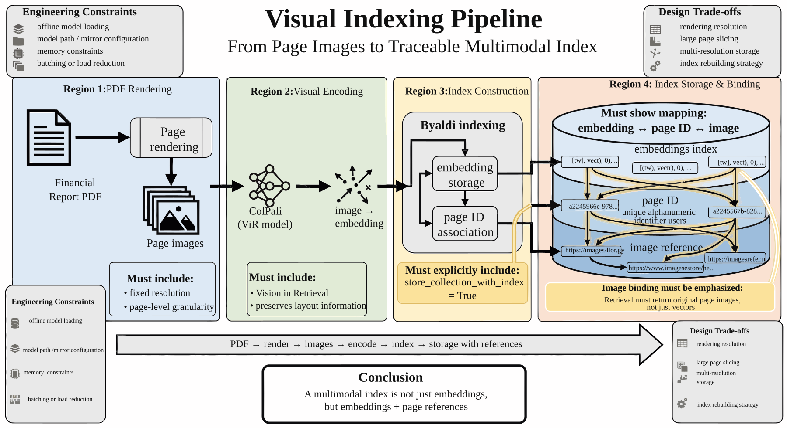
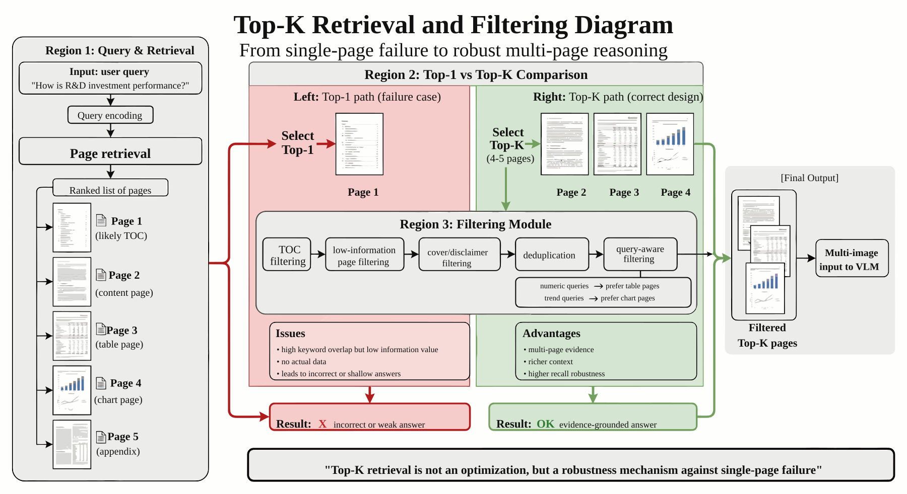
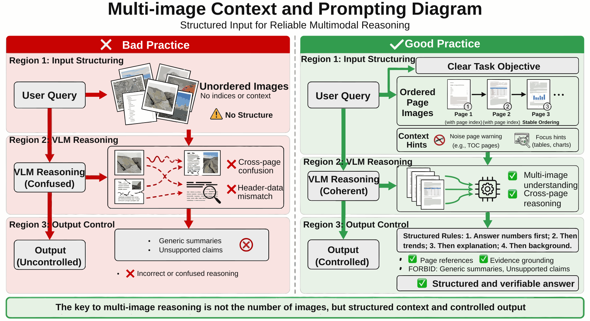
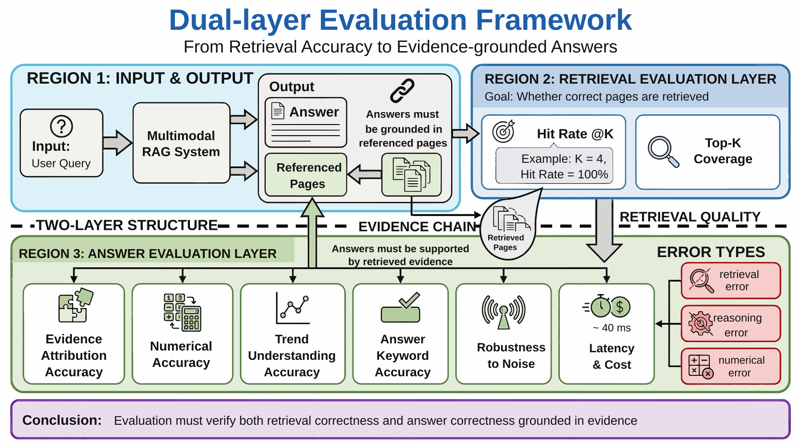
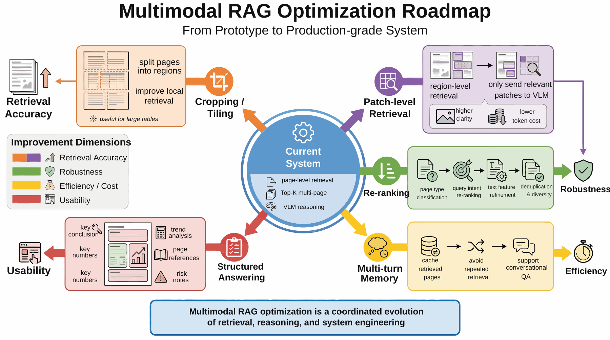
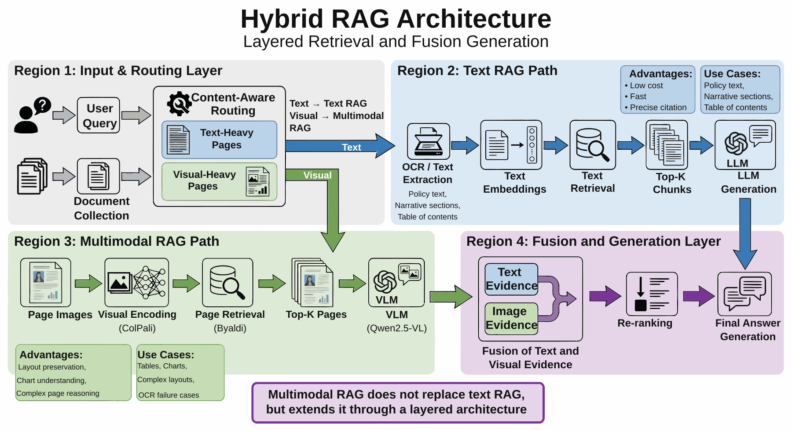

Project 5: Multimodal RAG Enterprise Financial Report Assistant¶
Abstract¶
P05 focuses on organizing complex PDF documents — such as corporate financial reports and prospectuses — into a retrievable, interpretable, and evaluable multimodal retrieval-augmented generation (RAG) pipeline. The chapter's emphasis is not on single-turn question answering, but on incorporating page visual structure, chart information, and body text semantics jointly into the retrieval and answering process.
The publication focus of this project is not to demonstrate that the system "can answer questions," but to demonstrate that answers can be traced back to verifiable evidence objects: report page numbers, page screenshots, table regions, footnote descriptions, charts, or body text paragraphs. For financial, audit, and investment research scenarios, an answer that cannot be anchored to evidence — however fluent its language — cannot be considered a reliable delivery.
This chapter can be understood along four main threads:
- Page rendering and visual indexing: incorporating complex PDF pages into page-level vector retrieval.
- Multi-page recall and evidence organization: handling chart pages, body text pages, table-of-contents pages, and cross-page relationships.
- Multimodal answering and cost control: completing multi-image reasoning and answer generation under evidence constraints.
- Evaluation, verification, and reproducibility boundaries: assessing system state through result evaluation, inspection scripts, and cost analysis.
Read in engineering order, this chapter corresponds to a complete pipeline:
Financial Report PDF → Page Rendering → Visual Indexing → Multi-Page Recall → Evidence Organization → Multi-Image Reasoning → Effect Evaluation → Cost Optimization
The core objective underlying this structure is to extend complex document question answering from optical character recognition (OCR)-driven text retrieval to an engineering system in which page visuals and text semantics both participate.
Keywords¶
Multimodal RAG; financial report question answering; visual retrieval; evidence citation; cost assessment
Project Goals and Reader Takeaways¶
This project uses a "Multimodal RAG Enterprise Financial Report Assistant" as its central case study. The goal is to organize complex financial report PDFs into a retrievable, citable, and evaluable multimodal question-answering system. Upon completing this chapter, readers should be able to identify the key data objects in this scenario, decompose the engineering pipeline, define acceptance criteria, and transfer the case methodology to similar data engineering tasks.
Scenario Constraints and Data Boundaries¶
The focus is on page-level visual retrieval and single-document or small-document financial report scenarios; production-scale full-library financial analysis is not covered. These boundaries allow the case to be reproduced and audited. When data scale, data sources, permission scope, or deployment environment change, the sampling strategy, quality thresholds, operating costs, and compliance requirements must be re-evaluated.
Architectural Decisions¶
This project adopts an architectural path of "page rendering, visual indexing, multi-page recall, evidence organization, multimodal answering, and citation evaluation." Visual indexing can draw on CLIP's image-text representation learning approach (Radford et al. 2021), while evaluation criteria for complex document question answering and chart question answering can reference DocVQA (Mathew et al. 2021) and ChartQA (Masry et al. 2022), respectively. This decision prioritizes well-defined input/output contracts, version traceability, localizable anomalies, and verifiable results, rather than compressing all logic into a one-off script run.
Sample Schema / Data Flow¶
The core data flow can be summarized as:
Listing P05-1 provides a process or path example illustrating the input/output relationships, structural constraints, or execution approach in this section.
Financial Report PDF → Page Images → Multimodal Index → Top-K Page Evidence → Multi-Image Reasoning → Answer with Source Citations and Evaluation Records
Listing P05-1: Process or path example
This snippet converts the above process into a structured representation that can be inspected.
The sample schema should retain at minimum the fields id, source, content_or_payload, metadata, quality_signals, split_or_stage, and audit_trace; specific fields are further refined by the data types, downstream tasks, and acceptance criteria of this project.
Core Implementation Snippets¶
The body text retains only the key implementation snippets that illuminate design trade-offs. Complete scripts, long configurations, run logs, and large files should be placed in the companion repository or appendix; code presentation focuses on input/output contracts, quality thresholds, error handling, and acceptance interfaces.
Experimental or Acceptance Metrics¶
Acceptance metrics include retrieval hit rate, citation accuracy, answer keyword accuracy, latency, page processing cost, noise-page suppression effectiveness, and evidence back-link completeness. If the project enters production, a course environment, or a public reproducibility experiment, the version number, dependency environment, random seeds, sample inspection results, and failure sample post-mortems should also be recorded.
Table P05-1 summarizes the corresponding comparison and engineering considerations.
Table P05-1: Multimodal RAG Publication Acceptance Table
| Acceptance Dimension | Metric / Evidence | Publication Verification Criteria |
|---|---|---|
| Evidence Retrieval | Top-K hit rate, table-of-contents page false recall rate, cross-page recall coverage, and evidence page stability | Each answer should be traceable to a page image, page number, retrieval score, and match rationale |
| Evidence Location | Back-link records for table regions, footnote descriptions, chart pages, body text pages, and screenshot evidence | Numerical values, trends, and interpretive conclusions must point to at least one verifiable evidence object |
| Answer Quality | Citation accuracy, numerical consistency, trend judgment accuracy, and abstention coverage | Financial figures, chart trends, footnote limitations, and conclusions must be human-verifiable |
| Cost Boundaries | Page rendering cost, visual model call count, and average latency | Delivery must clarify the difference between small-sample demonstration and production full-library scale |
Cost, Risk, and Compliance Boundaries¶
Costs arise primarily from page rendering, multimodal indexing, and visual model calls; risks are concentrated in financial figure misreading, chart hallucination, table-of-contents page false recall, and copyright boundaries. When external data, personal information, copyrighted content, or third-party services are involved, source descriptions, permission status, desensitization strategies, call records, and manual review records should be retained.
Common Failure Modes¶
Common failures include input distribution shift, missing schema fields, quality thresholds that are too loose or too strict, insufficient evaluation sample coverage, unstable model calls, and non-traceable results. When investigating, first locate data boundaries and intermediate artifacts, then examine the model, toolchain, and deployment environment.
Reproducibility Resources¶
Reproduction materials should include data source descriptions, minimal samples, configuration files, run commands, metric scripts, inspection reports, and artifact directories. The body text retains necessary snippets; complete notebooks, long scripts, and large files are maintained separately as companion resources. To extend this project into more general visual instruction or image-text question answering data, refer to LLaVA's visual instruction tuning paradigm (Liu et al. 2023) and COCO's general image annotation organization (Lin et al. 2014).
1. Project Background: The Necessity of a Multimodal RAG Financial Report Assistant¶
General-purpose large language models can already answer many financial common-knowledge questions, but the moment a question involves specific figures, chart trends, cross-page tables, or page-level localization in a corporate financial report, the model immediately reveals its limitations.
The most common problems fall into at least four categories.
The first is structural distortion. For example, in a balance sheet, if the columns "closing balance," "opening balance," "the Group," and "the Company" are reordered after OCR, the model may misidentify all column relationships even if it recognizes every number correctly. The result is not a "minor error" but a completely wrong financial interpretation.
The second is chart blindness. Many financial report questions do not require reading word by word; they require trend judgment — for example, "Has R&D expenditure as a percentage of revenue risen or fallen over the past three years?" or "At what stage did the cash flow inflection point occur?" A system that can only process text simply cannot see the graphical information.
The third is evidence fragmentation. The body text, notes, chart captions, management discussion and analysis in a corporate annual report are often scattered across different pages. When a user asks "How were operating results?", the answer may need to integrate a revenue trend chart, an R&D expenditure page, an intangible assets note, and the chairman's letter simultaneously. If the retrieval system fetches only one page at a time or can only recall a single text chunk, the answer will be severely incomplete.
The fourth is noise false recall. Table-of-contents pages in financial reports are particularly "dangerous" because they typically aggregate most of the keywords from the entire document. Traditional embedding retrieval very easily ranks table-of-contents pages at the top, causing the model to read a collection of chapter headings without ever reaching the actual data pages.
Therefore, the goal of P05 is not to build a surface-level demonstration of "asking questions about a PDF," but to construct a multimodal RAG prototype oriented toward complex document scenarios. It serves not a single query but a methodology:
When the answers in a document reside in the layout, charts, tables, and cross-page structure itself, a retrieval system cannot retrieve only text — it must incorporate "vision" into the retrieval stage.
2. Project Goals and Boundaries¶
2.1 Project Goals¶
This project focuses on the following four goals.
Goal One: Establish a visual retrieval pipeline for complex PDFs. Rather than forcibly compressing financial report pages into plain text, page images are incorporated directly into vector retrieval, enabling the system to understand layout, the presence or absence of charts, and visual structure.
Goal Two: Establish a multi-page evidence combination mechanism for question answering. Rather than letting the model view only a single-page screenshot, the system can perform joint reasoning over Top-K pages, enabling answers to cross-page, multi-evidence, and chart-plus-body-text questions.
Goal Three: Make answers interpretable and localizable. System output cannot merely be a "seemingly reasonable" summary; it must be traceable to specific pages, page numbers, page screenshots, table regions, footnote descriptions, or evidence combinations, facilitating review and debugging.
Goal Four: Form a reproducible, evaluable, and optimizable engineering path. The project not only demonstrates the implementation approach but also includes metrics, risks, failure modes, and cost discussions, forming a more complete engineering case pipeline.
2.2 Project Boundaries¶
To make the case reproducible, this project explicitly sets several boundaries.
1) Document Scope Boundary¶
The current implementation primarily builds an index and question-answering system around a single Chinese corporate financial report PDF; it is not a general document platform, nor a unified solution equally effective across all office documents.
2) Retrieval Granularity Boundary¶
The current core granularity is page-level visual retrieval. This is well-suited for handling charts and full-page tables, but for very long cross-page tables or particularly fine-grained small-region question answering, further patch-level or region-level retrieval augmentation may still be needed.
3) Generation Capability Boundary¶
The current generation stage relies on a multimodal large model to interpret page screenshots; therefore, answer quality is affected by image clarity, page density, chart complexity, and the upper bound of the model's visual capability.
4) Evaluation Boundary¶
The current evaluation is better suited as method validation rather than production-level acceptance. The existing question set is still small enough to demonstrate pipeline effectiveness, but insufficient to represent a large-scale real business environment.
2.3 The Purpose of Stating Boundaries¶
In engineering cases, what most easily leads to misjudgment is not the method itself, but the method's applicable scope. A case written without restraint may look like it "can do everything," yet teams attempting to reuse it have no idea where to begin. Conversely, stating boundaries clearly allows readers to understand:
- What types of documents this solution suits;
- What level the current implementation reaches;
- Which parts are already stable;
- Which parts still require future extension.
This style of writing is more suitable for engineering reuse than simply striving to appear more capable.
3. Project Positioning: P05's Place in the Capability Chain¶
If we view the overall large model application engineering as a capability chain, P05 occupies a core position in the segment of complex document understanding and multimodal retrieval augmentation.
Earlier chapters may have already discussed pure text RAG, structured question answering, SFT data factories, evaluation frameworks, and production acceptance. But all of these methods encounter a practical problem when faced with financial report PDFs:
When the answer is not just text but is part of the visual layout and chart structure, the assumptions of traditional text RAG no longer hold.
Therefore, the value of this chapter is not to reintroduce "what is RAG," but to demonstrate:
- Why PDF pages themselves should enter retrieval;
- Why visual retrieval and multimodal generation must be co-designed;
- Why failure points in complex documents appear more often in retrieval and evidence organization than in the final generation of a single sentence;
- How to consolidate a multimodal prototype into an engineering case, rather than remaining at the level of "the model is pretty good at looking at images."
In this sense, this chapter answers a larger question:
When document knowledge is embedded in tables, charts, and page structure, how should RAG systems be upgraded?
4. Overall Architecture: The Pipeline from Financial Report PDF to Multimodal Answer¶
Figure P05-1 illustrates the corresponding workflow or structure.

{kind=link}
From an engineering perspective, this project can be decomposed into three layers.
4.1 Layer One: Page Asset Layer¶
This layer addresses "how to transform a PDF into evidence objects suitable for visual retrieval." It primarily includes:
- PDF page rendering
- Page screenshot persistence
- Page metadata recording
- Mapping between pages and original page numbers
The goal of this step is not to answer questions, but to first convert the PDF into indexable, traceable, and reviewable page-level assets.
4.2 Layer Two: Visual Retrieval Layer¶
This layer addresses "how to find the most relevant pages given a question." It primarily includes:
- Query encoding
- Page visual vector recall
- Top-K multi-page return
- Table-of-contents page and low-value page filtering
This step determines whether the system can ultimately deliver pages with actual data to the generation stage, and is the critical threshold of multimodal RAG.
4.3 Layer Three: Multi-Image Reasoning Layer¶
This layer addresses "given multiple page screenshots, how to have the model perform comprehensive analysis rather than guessing page by page." It primarily includes:
- System Prompt role definition
- Table-of-contents page suppression instructions
- Unified injection of multiple images
- Output format constraints
- Binding answers to evidence
At this stage, the project graduates from "capable of retrieving images" to "capable of producing stable answers based on visual evidence."
5. Data Flow and Core Approach: The Vision-First Retrieval Chain¶
Many people ask: couldn't we first run OCR, then do text retrieval, and solve the problem adequately?
On a small number of simple, well-formatted PDFs, perhaps. But in financial report scenarios, this path quickly hits bottlenecks. The reason is that financial reports are not simply "long in content" — their structural expression is highly dependent on visual form.
5.1 Limitations of OCR-First¶
The biggest problem with OCR-first is not simply "insufficient recognition accuracy." Rather, it compresses what was originally a three-dimensional page into a linear string of characters. After that compression, the system typically loses:
- Row and column relationships
- Legend positions
- Multi-column layout structure
- The correspondence between local regions within a page and the body text
- The visual hierarchy of "heading — body text — chart — annotation" on a single page
Once these relationships are lost, no matter how strong the downstream embedding is, it operates on flattened information.
5.2 The Value of Vision-First¶
The core idea of Vision-First is: first preserve the expressive power of the page as a whole image, then let the retrieval model learn "which page visually resembles the page where the answer semantics reside."
This approach yields at least three benefits.
First, it preserves layout. The model sees not only text but also tables, graphics, heading hierarchies, and page structure.
Second, it naturally accommodates charts. Even if there is little text in a chart, as long as the visual features of the page are sufficiently relevant, it still has a chance of being recalled.
Third, it better matches how complex documents are actually read. When real users ask financial report questions, they are essentially asking "which few pages are most worth reading," not "which OCR character string is most similar."
5.3 Why This Project Uses ViR + VLM¶
The core combination adopted in this project is ViR (Vision in Retrieval) + VLM (Vision Language Model): ColPali for page visual encoding, Byaldi for storage and recall, and then the retrieved original page images are fed to Qwen2.5-VL for understanding and answering.
The key to this design lies not in the model names themselves, but in the separation of responsibilities:
- The retrieval model is responsible for finding pages;
- The multimodal generation model is responsible for reading images;
- The prompt is responsible for constraining answer behavior;
- Evaluation and logging are responsible for verifying whether the system truly finds, reads, and answers correctly.
Figure P05-2 illustrates the corresponding workflow or structure.

{kind=link}
6. Technology Selection: ColPali, Byaldi, and Qwen2.5-VL¶
An engineering case that only lists tool names without explaining why they were chosen is rarely useful for genuine replication. Therefore, the technology selection is elaborated in full here.
6.1 ColPali's Role in Document Retrieval¶
The value of ColPali lies in the fact that it does not treat pages as ordinary natural images; instead, it leans more toward visual understanding for document scenarios. For content such as financial reports, tables, charts, and layout structure, this distinction is critical.
Compared with general image embeddings, document retrieval models are more likely to capture:
- Table borders and column structure
- Distribution of heading regions versus body text regions
- Differences between number-dense pages and narrative pages
- Visual patterns of pages containing charts
In other words, ColPali's advantage is not that "it necessarily understands all financial concepts," but that it is better at first judging "whether this page looks like the kind of document evidence page the user is looking for."
6.2 Byaldi as an Indexing Framework¶
The significance of Byaldi is that it encapsulates the most cumbersome engineering aspects of multimodal retrieval:
- Model loading
- PDF-to-image conversion
- Vector index construction
- Query search
- Original image associated storage
This allows the project to focus its energy on retrieval strategy, evidence organization, and answer quality, rather than spending significant time on low-level tensor storage and access.
6.3 The Visual Model in the Generation Stage¶
The generation stage of multimodal RAG is not simply "sending images in and having the model describe them." It requires the model to:
- Identify trends in charts;
- Extract key figures from high-density financial tables;
- Synthesize content from multiple pages;
- Ignore noise when noisy pages are present.
This requires the model to not only view images but to read document images. Qwen2.5-VL-72B is selected as the primary visual generation model here precisely for its suitability in document parsing and chart understanding tasks.
6.4 Engineering Implications of the Technology Selection¶
The genuine reasoning behind this technology stack is:
- ColPali solves "which page to find";
- Byaldi solves "how to rapidly operationalize page finding";
- Qwen2.5-VL solves "how to truly comprehend what is found."
This offers substantially more engineering controllability than "having one all-purpose model handle everything."
7. Page Asset Construction: A Stable Page Evidence Base¶
In complex document projects, a frequently overlooked issue is whether page assets are stable and traceable.
If PDFs are rendered on the fly at query time, response times will suffer and debugging will become extremely difficult. Because once page rendering parameters, scale factors, or cropping logic change, system behavior may become inconsistent across runs.
7.1 What the Page Asset Layer Must Accomplish¶
The page asset layer must complete at minimum the following tasks:
- Standardize page rendering resolution;
- Generate stable filenames or IDs for each page;
- Preserve page number mappings;
- Record page dimensions, source file, and index version;
- Ensure that subsequent retrieval results can point back to the same original image.
7.2 Why "Reviewability" Matters¶
In multimodal RAG, when the system gives a wrong answer, the investigation path is typically not "why did the model suddenly hallucinate," but rather:
- Did retrieval recall the wrong pages?
- Were the images blurry or incorrectly cropped?
- Was the multi-image context polluted by a noise page?
- Did the prompt lead the model to over-summarize?
Without properly preserved page assets, it is very difficult to pinpoint which step in the pipeline the problem occurred at.
7.3 Correspondence with Existing Project Artifacts¶
The current project generates page-level assets and index-related artifacts, such as page_units.jsonl, block_units.jsonl, rag_index.json, and data/page_images. This demonstrates that it is not merely a temporary demonstration but already possesses a degree of asset accumulation awareness.
Figure P05-3 illustrates the corresponding workflow or structure.

{kind=link}
8. Index Construction: Organization of the Multimodal Index¶
The indexing stage implementation consists of three key steps: loading ColPali locally, using Byaldi to read the PDF and complete visual encoding, and storing original image references alongside the index.
This implementation reflects several key engineering judgments.
8.1 Local Model Loading and Offline Mode¶
The implementation sets offline mode and a mirror source, which clearly indicates that the project considered network environment and model reuse costs. This is an engineering detail well worth retaining, because many cases write only "load the model" without addressing what happens when downloads fail, are repeated, or have path mismatches.
8.2 Original Images Must Be Bound to the Index¶
The setting store_collection_with_index=True is critical. This is because the generation stage of multimodal RAG does not retrieve strings from a text corpus; it re-feeds the original images or page screenshots of the matched pages into the VLM. Without this association, retrieval and generation are disconnected.
8.3 The Real Challenges in Indexing¶
The true difficulties in indexing are typically not "whether the API can be called," but the following practical questions:
- What resolution is appropriate for page rendering?
- Should pages with extremely large tables be sliced?
- Should both thumbnail and high-resolution image versions be retained?
- How should the index be rebuilt after document updates?
- How should the system reduce load when VRAM is insufficient?
8.4 Why Index Construction Directly Affects the Capability Ceiling¶
In complex document projects, indexing is not a preparatory step but part of the capability ceiling itself. If the indexing stage is done carelessly, even the most powerful generation model can only "guess" on ambiguous evidence.
Figure P05-4 illustrates the corresponding workflow or structure.

{kind=link}
9. Retrieval Design: Top-K Multi-Page Recall¶
A very typical pitfall in financial report question answering is: the user's question spans multiple pages, but the system only wants to return one.
For example, questions such as "How were operating results?", "How did R&D investment perform?", and "What does the change in intangible assets indicate?" typically require synthesizing content from multiple pages in a real financial report. Returning only Top-1 will over-rely on single-page information and may even land directly on the table-of-contents page.
9.1 Why Table-of-Contents Pages Become High-Frequency False Recalls¶
Table-of-contents pages contain large numbers of chapter headings that naturally cover many high-frequency keywords, such as:
- Operating results
- Financial overview
- R&D investment
- Risk disclosure
- Balance sheet
For pure text embeddings, these pages are very "semantically close to the answer." But for users, the table-of-contents page is often the page with the lowest information density, since it merely indicates "where the answer might be found in which chapter" without providing actual data.
9.2 The Value of Top-K¶
The retrieval stage should not take only Top-1 but should take Top-K (4 to 5 pages is recommended), with filtering applied to table-of-contents pages.
The value of Top-K is:
- Increasing the probability of hitting the actual evidence pages;
- Allowing one question to be answered collectively by multiple pages;
- Reducing the risk of complete failure due to single-page false recall;
- Providing more complete context for downstream multi-image reasoning.
9.3 Why "Multi-Page Recall" Is Itself a Robustness Design¶
Many prototype demonstrations assume "retrieving the correct page" as a given. But real systems must consider:
When the top result is unreliable, can the system fall back on multi-page evidence?
From this perspective, multi-page recall is not a luxury but a necessary robustness mechanism.
9.4 Additional Filtering Logic Worth Considering¶
Beyond table-of-contents page filtering, one can also consider:
- Low-information-density page filtering
- Filtering out pure copyright notices or cover pages
- Deduplication of repeated pages
- Filtering page types that do not match the query type
For example, numerical questions can prioritize pages with dense tables; trend questions can prioritize pages with charts.
Figure P05-5 illustrates the corresponding workflow or structure.

{kind=link}
10. Prompt Design: Noise-Suppression Constraints in the Generation Stage¶
In text RAG, the prompt matters; in multimodal RAG, it matters even more. Because the system presents the model not with several clear text passages, but with multiple page screenshots that may contain noise.
10.1 The Key Approach to Generation-Stage Prompting¶
One key practice in the generation stage is to explicitly tell the model in the System Prompt that "the input may include table-of-contents pages — please ignore the table of contents and answer the question directly based on pages that contain specific data."
Although this seems simple, it is fundamentally performing noise-suppression constraint.
10.2 Why Multimodal Scenarios Are More Susceptible to Noise¶
Because the model sees images rather than pre-curated "correct evidence passages." An image may simultaneously contain:
- Table-of-contents headings
- Headers and footers
- Decorative images
- Irrelevant appendices
- A small block of critical figures buried in the body text
Without explicit instructions, the model very easily over-relies on content that "looks like a summary" and ignores the truly critical data regions.
10.3 A More Robust Prompt Skeleton¶
A prompt for multimodal financial report question answering should typically include at minimum:
- Role: professional financial / investment research / audit assistant;
- Task: answer specific questions based on the provided pages;
- Noise suppression: ignore table of contents, cover pages, and data-free pages;
- Evidence preference: prioritize tables, charts, and explicit figures;
- Uncertainty: if evidence is insufficient, state so;
- Output format: organize by conclusion, evidence, page number, and trend interpretation.
10.4 Why the Prompt Is Also "Post-Retrieval Processing"¶
Because one function of the prompt is to help the model perform secondary filtering within the recalled page set. In other words, the prompt is not only generation control but also part of evidence cleansing.
11. Multi-Image Context Organization: Arranging Multi-Image Evidence¶
Feeding multiple page images to the model does not guarantee that the model will organize them well. In practice, one of the most common issues in multi-image reasoning is: more images are provided, but the context structure becomes disordered.
11.1 Basic Principles for Multi-Image Injection¶
- The question text should be provided first to clearly state the task objective for this round;
- Image ordering should be kept as stable as possible;
- If page numbers are available, it is best to inform the model which page each image corresponds to;
- If a page may be a noise page, remind the model in text to handle it with caution;
- The output should ideally require citation of page numbers or source pages.
11.2 Why Order Matters¶
If image order is random, the model may mix the table header from a later page with data from an earlier page, which is especially problematic in cross-page table scenarios.
11.3 Why Output Style Must Be Constrained¶
Financial report questions easily elicit "grand summary-style" answers. The model will say many correct but generic financial platitudes, such as "the company continues to innovate, operates steadily, and has a positive long-term outlook." These statements are not entirely wrong, but if the user asks "what is the R&D expense ratio? What is the trend?", such answers have no value.
Therefore, in multi-image scenarios it is especially important to prompt the model to:
- First answer with numbers;
- Then address trends;
- Then provide interpretation;
- Finally add background context;
- Avoid answers that consist only of sweeping generalizations.
Figure P05-6 illustrates the corresponding workflow or structure.

{kind=link}
12. Step-by-Step Practice: The Minimal Reproducible Pipeline from Indexing to Question Answering¶
This section follows the existing implementation approach of the project, with emphasis on how to organize the pipeline into a reproducible engineering process.
12.1 Phase One: Visual Index Construction¶
In the current implementation, the project uses Byaldi to wrap ColPali, performing visual encoding of PDF pages and storing original images alongside the index. The key to this step is not "writing a few lines of code" but ensuring that the system can stably retrieve the same page image later.
Listing P05-2 provides a Python implementation snippet illustrating the input/output relationships, structural constraints, or execution approach in this section.
import os
from byaldi import RAGMultiModalModel
os.environ["HF_HUB_OFFLINE"] = "1"
os.environ["HF_ENDPOINT"] = "https://hf-mirror.com"
MODEL_PATH = "/path/to/models/colpali-v1_2-merged"
INDEX_NAME = "finance_report_2024"
def build_index():
if not os.path.exists(MODEL_PATH):
raise FileNotFoundError(f"Model directory not found: {MODEL_PATH}")
rag = RAGMultiModalModel.from_pretrained(MODEL_PATH, verbose=1)
rag.index(
input_path="annual_report_2024_cn.pdf",
index_name=INDEX_NAME,
store_collection_with_index=True,
overwrite=True,
)
Listing P05-2: Python implementation excerpt
This snippet converts the above process into a structured representation that can be inspected.
12.2 Phase Two: Multi-Page Retrieval¶
The existing implementation sets RETRIEVAL_K to 4, which is a pragmatic default. It provides a certain degree of evidence coverage without causing multimodal inputs to expand to an unwieldy size.
Listing P05-3 provides a Python implementation snippet illustrating the input/output relationships, structural constraints, or execution approach in this section.
RAG = RAGMultiModalModel.from_index(INDEX_NAME)
RETRIEVAL_K = 4
results = RAG.search(user_query, k=RETRIEVAL_K)
Listing P05-3: Python implementation excerpt
This snippet converts the above process into a structured representation that can be inspected.
12.3 Phase Three: Multi-Image Reasoning¶
The existing implementation assembles the question text and multiple page images into a payload, which is then passed to Qwen2.5-VL for processing. Two key points: first, the model is explicitly instructed to ignore the table of contents; second, image detail is set to high to enable reading of small text and dense figures in financial reports.
Listing P05-4 provides a Python implementation snippet illustrating the input/output relationships, structural constraints, or execution approach in this section.
content_payload = [{
"type": "text",
"text": (
f"You are a professional CFO assistant. You are provided with {len(results)} financial report screenshots. "
f"The images may include table-of-contents pages. Please ignore the table of contents and answer "
f"the following question directly based on pages that contain specific data: {user_query}. "
"If charts are included, please interpret the data trends in detail."
),
}]
for res in results:
content_payload.append({
"type": "image_url",
"image_url": {
"url": f"data:image/jpeg;base64,{res.base64}",
"detail": "high",
}
})
Listing P05-4: Python implementation excerpt
This snippet converts the above process into a structured representation that can be inspected.
12.4 Phase Four: Result Return and Evidence Organization¶
Strictly speaking, this step is omitted in many prototype demonstrations. But in engineering practice, it is critically important. It is recommended to return at minimum:
- The question
- Retrieved page numbers
- Key conclusions
- Evidence summary
- Raw model output
- Latency and token statistics
Only by preserving these logs will it be possible to replay failures and analyze quality later.
13. Sample Run Record: Runtime Evidence and Logs¶
A sample run record might read as follows: for the question "How were operating results?", the system recalled pages 49, 91, 130, and 8, and generated an analysis covering R&D investment, intangible assets, and corporate social responsibility based on these pages. For formal delivery, the retrieval log, page number evidence, raw model output, and version information should be saved simultaneously.
This sample run demonstrates at least three things.
First, the system did not rely on a single page but genuinely performed multi-page synthesis.
Second, the table-of-contents page did not completely block the results, indicating that multi-page recall and the noise-suppression prompt took effect.
Third, the model was already able to extract fairly specific information from image-text mixed pages, rather than merely saying "operating conditions are favorable."
Of course, this sample run also highlights a practical issue: the answer may still contain somewhat generic corporate narrative content, such as corporate social responsibility and the chairman's letter. This indicates that while multi-page recall improves coverage, it also introduces greater topic drift risk.
13.1 Why Run Records Matter¶
In engineering practice, chapters that are only "theoretically feasible" are insufficient to support reproduction. Once real logs are included, readers can see:
- Which pages the system actually recalled;
- Whether the model output was excessively verbose;
- Whether the multimodal pipeline has been validated on real questions.
13.2 These Logs Can Also Help Refine Prompts¶
For example, if the model consistently mixes in macro-level statements such as "chairman's letter" content, one can further add to the prompt:
- Prioritize quantitative metrics;
- Non-numerical background information should serve only as supplementary material;
- If a page lacks direct data, do not expand into macro-level judgments.
14. Evaluation and Validation: Validation Approaches for Multimodal RAG¶
Complex document question answering most easily falls into one trap: answers sound very professional, but the supporting evidence is not necessarily correct.
Therefore, evaluation for multimodal RAG must cover at least two layers:
- Whether retrieval found the correct pages;
- Whether the answer drew correct conclusions from the correct pages.
14.1 What the Project's Current Metrics Indicate¶
The current project processed a total of 146 pages from a single PDF, parsing 1341 blocks, of which table_like=104 and chart_like=4. This indicates that the system has already incorporated non-pure-text evidence into the overall processing scope. The evaluation set consists of 8 questions; retrieval hit rate@4, citation accuracy, and answer keyword accuracy are all 100%, with an average latency of approximately 40 ms.
14.2 Why These Metrics Look Very Clean¶
These results demonstrate that the current pipeline is already quite stable under controlled conditions. The real concern is not that the scores are insufficiently high, but that the evaluation question set is too small and may make the metrics "overly clean."
14.3 Key Metrics to Focus on in Multimodal Scenarios¶
It is recommended to establish at minimum the following metric categories:
- Retrieval hit rate@K: whether the correct pages appear in the recalled set;
- Evidence citation accuracy: whether the page numbers cited in the answer truly support the conclusion;
- Evidence back-link completeness: whether key conclusions in the answer can be traced to page numbers, screenshots, tables, footnotes, or chart evidence;
- Numerical accuracy: whether key figures are correctly transcribed and matched to the right column;
- Trend comprehension accuracy: whether chart trends are correctly interpreted;
- Noise robustness: how much performance degrades when table-of-contents pages are introduced;
- Average latency and cost: whether the system is engineering-acceptable.
14.4 Why "Chart Trend Comprehension" Should Be Separated Out¶
Because chart comprehension is not equivalent to text extraction. A model may be able to read the words "2024," "revenue," and "R&D expenditure," yet still misidentify the trend direction, or confuse year-over-year and quarter-over-quarter comparisons.
Figure P05-7 illustrates the corresponding workflow or structure.

{kind=link}
15. Metric Interpretation: Boundaries of Current Results¶
P05's current metrics are very clean, which itself indicates that the pipeline design approach is correct. Especially in a complex document scenario, if retrieval, citation, and answer keywords all maintain consistency, the project at minimum has good closed-loop capability.
But from an engineering perspective, these results more closely resemble:
- The pipeline is end-to-end functional;
- Performance is stable on the current sample set;
- A foundation for continued expansion exists.
They do not yet mean:
- The system is adapted to all financial reports;
- All cross-page tables can be stably comprehended;
- All chart questions can be answered without error;
- Production-level general capability has been reached.
15.1 Why Small Evaluation Sets Easily Appear "Overly Smooth"¶
Because with fewer questions, coverage tends to be narrower. The system may only be performing well on the most typical and clearest samples, while its fragility with complex footnotes, ambiguous questions, and abnormally formatted pages has not yet been fully exposed.
15.2 Why This Is Actually a Positive Signal¶
Because a good engineering case does not need to "do everything" from the start. What matters more is that it can clearly demonstrate:
- What has currently been validated;
- What has not yet been validated;
- Where it is most worthwhile to expand next.
From this perspective, P05's metrics are not merely a "scorecard" but also a starting point for the subsequent expansion roadmap.
16. Failure Modes: Major Risks in Multimodal Financial Report Question Answering¶
Looking only at success cases easily creates the impression that the main challenges of multimodal RAG have been solved. But in real engineering, failure modes are the part most worth examining carefully.
16.1 Table-of-Contents Page False Recall¶
This is the most typical problem. The symptom is that the recalled pages are rich in keywords but contain no substantive data.
16.2 Correctly Identifying the Subject but Misreading the Trend¶
For example, the model sees a revenue chart but interprets "gradual recovery" as "sustained decline," or confuses different business lines corresponding to different colored legends.
16.3 Table Column Misalignment¶
Especially in cross-page tables, extra-wide tables, or dense financial notes, the model may capture the figures without correctly capturing the column relationships.
16.4 Topic Drift During Multi-Page Synthesis¶
When too many pages are recalled, the model mixes macro-level narratives from secondary pages into the main answer, causing the answer to "look more complete" while actually drifting from the user's question.
16.5 Insufficient Page Clarity¶
If the original image resolution is inadequate or screenshots have been compressed, small text, footnotes, and column headers become blind spots for the generation stage.
16.6 Why Failure Replay Is Important¶
The current failure replay sample count is 0, which means the failure sample base is still thin. For a project intended for ongoing optimization, this is actually one of the assets that should be prioritized for future accumulation. Without building up failure samples, it is very difficult to establish a genuinely valuable regression test set.
17. Cost Analysis: The Cost Structure of Multimodal RAG¶
The cost section can begin with a few very intuitive figures:
- ColPali indexing takes approximately
0.5 s/page; - Building an index for a 200-page financial report takes approximately 2 to 3 minutes;
- A 1024×1024 image costs approximately 1,000 to 1,500 tokens in a VLM;
- Top-4 retrieval means input tokens can easily reach 5,000+;
- A single complex question-answering call to Qwen2.5-VL costs approximately 0.05 to 0.1 CNY.
These figures reveal a reality:
The primary cost of multimodal RAG is not only that "the model is more expensive," but that page images significantly amplify the context overhead per question-answering call.
17.1 Indexing Cost¶
The more pages, the higher the rendering resolution, and the larger the model, the higher the indexing cost. This means indexing is typically best performed as an offline batch process, not constructed on the fly before each query.
17.2 Inference Cost¶
Once the system adopts Top-K multi-page input, inference cost scales approximately linearly with the number of pages. If high-resolution mode and long outputs are also applied, both cost and latency will rise rapidly.
17.3 Hidden Costs¶
The costs most easily underestimated also include:
- Failed retry costs;
- Log and page asset storage costs;
- Manual evaluation and verification costs;
- Operations costs for rebuilding indexes when documents are updated.
17.4 Why Cost Must Be Measured Separately¶
The core risk of complex document projects is that "the effect can be demonstrated, but the cost boundaries required for long-term use are absent." Only when cost analysis is clearly stated can readers judge whether this solution is appropriate for:
- Offline batch analysis;
- High-value, low-frequency question answering;
- Deep investment research assistance;
- Or whether it requires further compression before deployment.
18. Optimization Directions: Paths for Deepening the Current Prototype¶
Three representative optimization directions can be summarized: page cropping, local region retrieval, and caching mechanisms. These are elaborated below.
18.1 Page Cropping / Tiling¶
For very large financial tables, a full-page screenshot is often neither conducive to retrieval nor to generation. Splitting a page into multiple local regions and indexing each separately allows the system to more easily hit "the region that truly contains the answer."
18.2 Patch-Level Retrieval¶
If patch-level retrieval becomes feasible in the future, the system would not need to feed the entire page to the VLM; instead, it would input only the local regions most relevant to the question. This can simultaneously improve clarity and reduce token costs.
18.3 Retrieval Result Reranking¶
If the current system primarily relies on a single-path recall, further additions can include:
- Page type identification-based reranking;
- Sort correction based on query intent;
- Secondary filtering combining lightweight text features;
- Deduplication and complementarity-based ordering.
18.4 Multi-Turn Question Answering and Evidence Memory¶
For continuous questioning scenarios, the system can cache pages confirmed as useful in the previous turn, avoiding full recall from scratch each time.
18.5 Templated Answer Output¶
For enterprise users, the answer ideally should not only be natural language but also structured output:
- Core conclusion
- Key figures
- Trend judgment
- Evidence page numbers
- Risk notes
This facilitates integration with downstream systems.
Figure P05-8 illustrates the corresponding workflow or structure.

{kind=link}
19. Engineering Deployment: Suitability for High-Value, Low-Frequency Scenarios¶
Not every question-answering system needs to pursue high concurrency from the outset. For a multimodal financial report assistant, the more reasonable deployment path typically begins with high-value, low-frequency questions.
19.1 Well-Suited Scenarios¶
- Investment research teams conducting deep financial report reading assistance;
- Audit and financial analysis professionals performing footnote verification;
- Enterprise internal knowledge assistants handling complex PDFs such as annual reports and prospectuses;
- Management teams rapidly locating pages containing specific financial metrics.
19.2 Less-Suited Scenarios¶
- Large-scale, high-concurrency, low-unit-value question answering;
- General customer service requiring millisecond-level response;
- Systems expected to process any document without adaptation;
- Ultra-low-budget environments that cannot accommodate image input costs.
19.3 Why Starting with High-Value Scenarios Is More Practical¶
Because these scenarios typically:
- Carry high per-question value;
- Have users with high accuracy requirements;
- Can accept relatively high per-call costs;
- Are more willing to pay for capabilities such as "reading charts, extracting footnotes, and synthesizing across pages."
In other words, the place where a multimodal financial report assistant first demonstrates value is usually not "replacing all search," but "delivering substantially better answers for the hardest complex document questions."
20. Relationship with Traditional Text RAG: Upgrade and Stratification¶
A common misconception is: since multimodal RAG is more capable, should it completely replace text RAG?
In practice, the answer is not necessarily yes.
20.1 Text RAG Still Has Value¶
For content such as table of contents, chapter descriptions, policy clauses, and management narrative text, text RAG is typically still cheaper, faster, and easier to support for precise citation.
20.2 What Multimodal RAG Is Better Suited For¶
- Chart-dense pages
- Table-dense pages
- Complex layout pages
- Pages where OCR is prone to distortion
- Questions that rely on visual context
20.3 A More Reasonable Long-Term Architecture¶
In the long run, a more reasonable architecture is often not "using only one kind of RAG," but rather:
- Text pages go through text retrieval;
- Chart pages go through visual retrieval;
- Fusion is performed at the reranking or generation stage.
This preserves the efficiency advantages of text RAG while using multimodal RAG as a fallback for complex scenarios.
Figure P05-9 illustrates the corresponding workflow or structure.

{kind=link}
21. Quality Baselines: Usability Standards for the Multimodal Financial Report Assistant¶
The purpose of quality baselines is to make the minimum usable threshold of the system explicit, rather than pursuing an abstract perfect score.
Such a system needs to establish at minimum the following five baselines.
21.1 Retrieval Baseline¶
For the core question set, correct evidence pages should stably enter Top-K, and table-of-contents pages should not persistently occupy top positions.
21.2 Numerical Baseline¶
Key figures in model answers should not frequently be transcribed incorrectly, misread from the wrong column, or attributed to the wrong entity.
21.3 Trend Baseline¶
For typical chart questions, the system should reliably distinguish between basic trend judgments such as rising, falling, fluctuating, and inflection.
21.4 Evidence Baseline¶
Answers should preferably cite the page or evidence source they are based on, rather than delivering unverifiable "conclusion-only" responses.
21.5 Cost Baseline¶
The system must operate within acceptable latency and cost bounds; otherwise, even if the quality is good, it will be difficult to integrate into real workflows.
21.6 Why Baselines Are More Reliable Than One-Off Demonstrations¶
A one-off demonstration result does not indicate that the system is stable. Only by establishing baselines can teams judge when to expand the system and when to rework it.
22. Deliverables and Reproduction Path¶
To make the complete pipeline reproducible, in addition to principles and code, a set of key artifacts must be preserved.
22.1 Primary Existing Deliverables¶
The current project has produced the following key artifacts:
data/processed/page_units.jsonldata/processed/block_units.jsonldata/processed/rag_index.jsondata/page_imagesdata/eval/reference_questions.jsonldata/eval/evaluation_results.jsonldata/eval/failure_replay.jsonldata/reports/p5_report.mddata/reports/p5_metrics.jsondata/reports/p5_test_results.jsondata/reports/p5_test_report.md
22.2 Why These Artifacts Matter¶
- Page assets make evidence reviewable;
- Index files make retrieval reproducible;
- Evaluation question sets make quality comparable;
- Test reports make system status trackable;
- Failure replay is the foundation for ongoing optimization.
22.3 Reproduction Steps¶
- Prepare a Chinese financial report PDF with a substantial number of charts and tables;
- Render pages and build the visual index;
- Design a question set covering numerical, trend, cross-page, and noise-page scenarios;
- Run multi-page retrieval and multi-image question answering;
- Verify answers against page numbers and original images;
- Accumulate failure cases into the replay set.
23. Summary: The Key to Multimodal RAG Is Not "the Model Can See Images" but "the System Knows How to Use Images"¶
The key significance of P05 is not proving that "visual large models can read financial reports," but organizing this capability into an engineering pipeline that is retrievable, verifiable, and reviewable:
When answers exist in page layouts, charts, tables, and typographic structure, the RAG system must incorporate vision into retrieval itself, rather than simply adding an image as a last step.
From the existing project materials, P05 already possesses several critical engineering characteristics:
- A clear problem definition and method boundaries;
- A pipeline from page assets to visual indexing;
- Multi-page recall and anti-table-of-contents design;
- Sample run records and evidence fields that can be extended into formal logs;
- Baseline evaluation and validation results;
- Cost analysis and subsequent optimization directions.
From this, it is clear that it is no longer merely a one-off multimodal prototype demonstration, but more closely resembles a complex document RAG engineering case that teams can reference.
This chapter can be summarized in one sentence:
The challenge of multimodal RAG has never been solely making the model see images — it is redesigning retrieval, evidence organization, prompting, evaluation, and cost control collectively around "visual evidence."
Special Topic: Evaluation Set Design and Annotation Standards¶
One of the most common pitfalls in multimodal RAG projects is using a small number of "seemingly difficult questions" for demonstration without seriously building an evaluation set. This approach is convenient in the short term, but it is difficult to support ongoing optimization. When system performance fluctuates, teams often cannot determine whether the problem lies in retrieval, evidence organization, visual comprehension, or answer generation.
I. Types of Questions the Evaluation Set Should Cover¶
For multimodal question answering on financial reports, the evaluation set should not consist solely of "find a specific number" questions. A more reasonable design typically covers the following categories:
- Numerical extraction questions, testing whether the system can accurately locate and read financial data;
- Trend judgment questions, testing whether the system can understand line charts, bar charts, or percentage changes;
- Cross-page integration questions, testing whether the system can assemble information from different pages into a complete answer;
- Text-chart cross-reference questions, testing whether the system can cross-validate textual statements with chart evidence;
- Noise suppression questions, testing whether the system will be misled by table-of-contents pages, cover pages, section pages, or keyword-dense pages;
- No-answer questions, testing whether the system can explicitly state insufficient evidence rather than forcing an answer.
Only when all these question types enter the evaluation set can teams more accurately identify what the system excels at and where it is weak. Otherwise, the model may perform well on numerical questions while consistently failing on trend comprehension; if the evaluation set lacks the latter, teams will mistakenly conclude that the system "is already nearly ready for production."
II. Annotations Should Not Record Only the Final Answer¶
Annotation for multimodal RAG is more complex than for pure text QA, precisely because the "correct answer" is often not the only thing that needs to be labeled. A sufficiently useful evaluation sample typically contains at minimum:
- Question text;
- Reference answer or acceptable answer range;
- Key evidence page numbers;
- Evidence type, specifying whether the question relies more on tables, charts, body text, or multi-page combinations;
- Tolerance rules, for example whether numerical values allow rounding, and whether trend terms allow synonyms;
- Common error patterns, such as the most likely false recall of table-of-contents pages, or the most likely misreading of year-over-year versus quarter-over-quarter figures.
The value of labeling all this information lies in enabling finer-grained diagnosis later. For example, after a particular change, the overall score may remain the same, but the "proportion of key evidence pages entering Top-K" drops, while the "proportion of questions answered correctly via language heuristics" rises. For a complex document system, this is not progress but hidden regression. Without fine-grained annotation, this type of regression is typically difficult to detect in time.
III. Evaluation Sets Need a Two-Layer Structure: Regular Set and Stress Set¶
To balance stable tracking with problem discovery, the evaluation set is best divided into two layers:
- A regular set for stable regression testing after each change;
- A stress set specifically designed to expose the system's most vulnerable boundaries.
The regular set typically covers the most common core question types, does not need to be particularly large, but must be stable. The stress set emphasizes challenge, and is appropriate for including:
- Small-text dense tables;
- Cross-page table questions combined with charts;
- Questions where table-of-contents pages and body text pages are highly similar;
- Questions where the same concept appears on multiple pages with different meanings;
- Questions with very high demands on "no answer" judgment.
The significance of this two-layer structure is that the regular set helps teams track overall trends, while the stress set helps teams identify true bottlenecks. Only with both simultaneously present can evaluation guide daily iteration and support medium-to-long-term optimization.
IV. Failure Replay Needs Continuous Supplementation¶
An evaluation set is not a document written once and finalized; it should grow continuously with failure cases. For projects such as P05, the most valuable new evaluation samples typically come from real failure replay.
The recommended practice is to consider converting each of the following occurrences into a replay sample:
- Table-of-contents page false recall leading to an off-topic answer;
- Table column misalignment causing figures to be read from the wrong row;
- Chart trend read in reverse;
- During multi-page synthesis, mixing different years or different entities together;
- Providing a high-confidence answer without supporting evidence.
These replay samples will continuously remind teams that the areas most worth optimizing are not necessarily "the most complex-looking features," but the errors most likely to damage user trust.
Special Topic: Pre-Production Gate Conditions for Enterprise Deployment¶
For a multimodal financial report assistant to transition from demonstration to real usage, the key is not making answers more elaborate but establishing clear production gates. Because financial report question answering inherently involves high-value decisions — once the system persistently distorts critical figures, trend judgments, or evidence localization, users will quickly lose trust.
I. Document Ingestion Gate: Not All PDFs Should Be Directly Ingested¶
The system's first gate should be placed at the document ingestion stage. Because different financial report PDFs vary greatly in scan quality, layout complexity, chart density, and language style; ingesting without filtering typically multiplies the difficulty of downstream retrieval and generation.
At document ingestion, it is worth checking at minimum:
- Whether page rendering is clear and whether there are large areas of blur or broken text;
- Whether page number mapping is stable;
- Whether charts, tables, and body text can be properly preserved;
- Whether there are heavily rotated pages, extra-long folded pages, or skewed scans;
- Whether the document belongs to a document type already validated by the current system.
The value of doing this step well is that the system will not directly index documents that clearly exceed its capability boundaries and then blame the model for all subsequent problems.
II. Retrieval Gate: Evidence Pages Must Pass the Threshold First¶
The second gate for multimodal RAG should be placed at the retrieval layer. The reason is simple: if core evidence pages consistently fail to enter Top-K, even the most powerful model downstream is unlikely to recover.
The retrieval gate can focus on:
- Evidence page Top-K hit rate on the core question set;
- High-ranking false recall rate for low-value pages such as table-of-contents pages, copyright pages, and cover pages;
- Stability of the same question across different index versions;
- Whether complementary pages for multi-page questions can enter the candidate set simultaneously.
Only when these metrics reach an acceptable level does evaluation of the generation stage have meaning. Otherwise, teams will continuously tune the prompt, yet always be working with incorrect evidence.
III. Answer Gate: Answers Must Not Only Sound Right but Must Be Verifiable¶
For enterprise scenarios, the answer gate cannot only assess "whether the language is fluent" — it must assess whether the answer is verifiable. A more reliable answer gate typically includes at minimum:
- Key figures should not frequently be transcribed incorrectly, missed, or attributed to the wrong entity;
- Trend conclusions should not persistently contradict the direction of charts;
- For cross-page questions, the answer should not confuse different entities, different years, or different accounting bases;
- For questions with insufficient evidence, the system should be able to express conservatively or decline to answer;
- Answers should include page numbers, screenshot evidence, tables, or footnote descriptions to facilitate human review.
The essence of this gate is converting "answering like an expert" into "answering in a way that can withstand scrutiny." In financial report scenarios, the latter is far more important than the former.
IV. Operations Gate: The System Must Be Maintainable Long-Term¶
Before deployment, there is another category of gate frequently overlooked: the operations gate. That is, even if system metrics are acceptable, without stable mechanisms for index rebuilding, log management, evaluation regression, and error handling, long-term maintenance will be very difficult.
The operations gate can include at minimum:
- Whether the index update time after new documents are ingested is controllable;
- Whether critical logs are retained to facilitate locating failure issues;
- Whether evaluation sets and replay sets can automatically regress after version changes;
- Whether there is a fallback path when abnormally high costs or abnormally long latency occur;
- Whether the manual review role is clearly defined, especially for high-risk question-answering scenarios.
Only by incorporating the operations gate into deployment conditions can multimodal RAG transition from "a one-time demonstration of effectiveness" to "a system people dare to use continuously."
Special Topic: Collaborative Workflow for the Multimodal Financial Report Assistant¶
A project such as P05, when deployed in practice, typically cannot be completed independently by a single model engineer. It inherently requires collaboration across document processing, retrieval, visual comprehension, evaluation, and business understanding. Therefore, the collaborative workflow itself should become part of the chapter, rather than being implicit in project experience.
I. Role Division: Different Problems Are Handled by Different Roles¶
A relatively clear collaborative structure typically includes:
- Document processing engineering role, responsible for PDF rendering, page assets, index construction, and storage;
- Retrieval engineering role, responsible for recall strategy, reranking, false recall governance, and cache optimization;
- Multimodal generation role, responsible for prompts, image organization, and answer structure constraints;
- Evaluation role, responsible for question sets, annotation standards, regression evaluation, and failure replay;
- Domain expert or business role, responsible for judging whether questions genuinely reflect financial report reading needs and whether answers have business usability.
If these role boundaries are unclear, the project easily develops a typical problem: all failures are attributed to "the model didn't understand the image." But the real situation is usually more complex — sometimes the index was not built well, sometimes the question design is unreasonable, and sometimes the business expectations themselves are not suited to the current system's capability.
II. Daily Iteration: Entering the Next Optimization Round from Failure Cases¶
For such systems, the most effective collaboration rhythm is typically not centered on "what new features were added today," but on "what are the most worth-fixing failure cases this week." A practical iteration cadence might be:
- First collect representative failed question-answer pairs from the current week;
- Then determine whether the problem belongs to retrieval, generation, evaluation, or document ingestion;
- Then decide whether to supplement replay, tune the prompt, adjust ranking, or restrict document ingestion boundaries;
- Finally verify in the next regression test whether the problem has genuinely been mitigated.
The advantage of this cadence is that it focuses cross-role collaboration on the same set of discussable samples, rather than having each role optimize independently from their own local perspective.
III. Business Integration: Serve High-Value Decisions First, Then Expand Scenarios¶
If a multimodal financial report assistant is to be accepted within an enterprise, the most stable path is typically to first serve high-value, low-frequency, verifiable scenarios, such as investment research assistance, financial analysis, audit verification, or management-level rapid location of specific financial metrics. A shared characteristic of these scenarios is that users are willing to spend time reviewing evidence and willing to accept an output format such as "answer with page numbers, recommended manual review."
The collaborative benefits of this approach are clear:
- Business roles can provide higher-value questions more accurately;
- Engineering roles can refine retrieval and prompts around a small number of key scenarios;
- Evaluation roles can accumulate high-quality replay more quickly;
- Teams can first form a usage consensus within a smaller scope before gradually expanding.
In the long run, this collaborative approach of "first going deep on the most worthwhile scenarios" has a much better chance of making the system genuinely product-grade than attempting to cover all documents, all question formulations, and all users from the start.
Special Topic: Evidence Presentation and Answer Display Standards¶
In real usage, a multimodal financial report assistant faces another critical but often underestimated question: how answers should be displayed. A system that only outputs a fluent paragraph may look like "intelligent question answering" in the short term, but it is difficult to build trust over the long term. For a high-value document scenario such as financial reports, the more appropriate approach is to treat answer display as part of the system design.
I. Answers Should Prioritize Displaying Conclusions, Evidence, and Limitations¶
An answer structure more suitable for enterprise scenarios typically includes at least three parts:
- Core conclusion, directly answering the user's current question;
- Evidence description, pointing to the main page numbers, page types, screenshot evidence, key tables/charts, or footnotes relied upon;
- Limitation note, stating whether the current answer relies on multi-page synthesis, whether there is insufficient evidence, and whether manual review is recommended.
The advantage of this structure is that it simultaneously displays "what the model said" and "why the model said it." For financial, audit, and investment research users, the latter is often as important as the former.
II. Page Numbers and Evidence Types Are Best Explicitly Presented¶
If the system has already completed page-level indexing and multi-page recall, it is best to make this information explicitly visible at the front end or report layer, rather than leaving it only in logs. The most valuable information is typically not complex visualizations, but a few stable fields:
- Retrieved page numbers;
- Whether evidence belongs to body text, tables, footnotes, or charts;
- Stable path to evidence screenshots or page images;
- Whether multi-page synthesis is involved;
- Which page is the primary evidence page and which are supporting pages.
The significance of this approach is that users can quickly judge whether an answer is worth continuing to trust, and it facilitates teams rapidly returning to original evidence when disputes arise. For complex document systems, this "reviewability" is more important than one-off generation.
III. Uncertain Answers Must Retain Cautious Expression¶
Multimodal document question answering very easily produces high-confidence answers in a state of "just barely understanding." To avoid this, the answer display standards should explicitly preserve several types of cautious expressions, such as:
- Current evidence pages do not fully cover the question;
- Current pages can support trend judgment but are insufficient to support precise numerical conclusions;
- This question involves multiple entities or multiple years; further verification is recommended;
- Table-of-contents or overview pages were recalled; current conclusions may need additional body text page support.
Such caution does not weaken the system; rather, it significantly improves user trust. Because in financial report scenarios, users are generally more able to accept "the system knows where it is still uncertain" than "the system is always very confidently wrong."
Special Topic: From Question-Answering Assistant to Analytical Workbench¶
P05 currently demonstrates a multimodal financial report question-answering assistant, but from an engineering evolution perspective, it can readily advance further toward an analytical workbench form. The reason this layer is worth adding is that enterprise users in real scenarios typically do not only need to "ask one question and get one answer" — they also need to continuously browse, compare, and track evidence.
I. An Analytical Workbench Emphasizes Continuous Tasks More Than Question Answering¶
A question-answering assistant is better suited to answering individual questions, while an analytical workbench is better suited to supporting continuous tasks, such as:
- Tracking multiple financial topics for the same company;
- Conducting year-over-year comparisons for the same metric;
- Continuously drilling down on the same question while preserving evidence context;
- Organizing results from multiple question-answering sessions into briefs or verification checklists.
Once in this continuous task form, the system design focus expands from "whether a single answer is good enough" to "whether evidence can be continuously reused, whether answers can be continuously organized, and whether question chains can be managed."
II. The Current Project Has Already Reserved Key Foundations for the Workbench Form¶
The reason P05 is suitable for expansion toward a workbench direction is that it already has several important foundations:
- Page assets are reviewable;
- Evidence pages can be stably cited;
- Multi-page recall naturally suits continuous question reuse;
- Failure replay and evaluation sets can support subsequent iteration.
This means that if the team were to build a more powerful enterprise document analysis interface in the future, there would be no need to rebuild the existing project from scratch; instead, further construction could be layered on top of the existing "indexing — evidence — answering" main pipeline.
Chapter Summary¶
This chapter used the Multimodal RAG Enterprise Financial Report Assistant to show how complex financial-report PDFs can become retrievable, citable, and evaluable assets. The project keeps task definition, data boundaries, architecture choices, sample schema, metric acceptance, and reproducibility resources on one pipeline, which makes the retrieval and answering behavior easier to inspect.
The scope is page-level visual retrieval for single-document or small-document financial-report scenarios. It does not cover production-scale full-library financial analysis. Larger-scale or more regulated use requires another review of data sources, permission status, manual review proportions, operating costs, and rollback plans.
As part of Part Fourteen, this chapter corresponds to the project-level deployment verification of the methods presented earlier. Readers can use this case together with Part Thirteen's data recipes, the platform governance chapters from earlier sections, and the checklists in the appendix to form a closed loop from method understanding to engineering delivery.
References¶
Liu H, Li C, Wu Q, Lee Y J (2023) Visual Instruction Tuning. NeurIPS 2023. https://doi.org/10.52202/075280-1516.
Lin, T-Y, Maire M, Belongie S, Hays J, Perona P, Ramanan D, Dollár P, Zitnick C L (2014) Microsoft COCO: Common Objects in Context. ECCV 2014. https://doi.org/10.1007/978-3-319-10602-1_48.
Radford A, Kim J W, Hallacy C, Ramesh A, Goh G, et al. (2021) Learning Transferable Visual Models From Natural Language Supervision. ICML 2021.
Mathew M, Karatzas D, Jawahar C V (2021) DocVQA: A Dataset for VQA on Document Images. WACV 2021. https://doi.org/10.1109/wacv48630.2021.00225.
Masry A, Long D X, Tan J Q, Joty S, Hoque E (2022) ChartQA: A Benchmark for Question Answering about Charts with Visual and Logical Reasoning. ACL 2022. https://doi.org/10.18653/v1/2022.findings-acl.177.